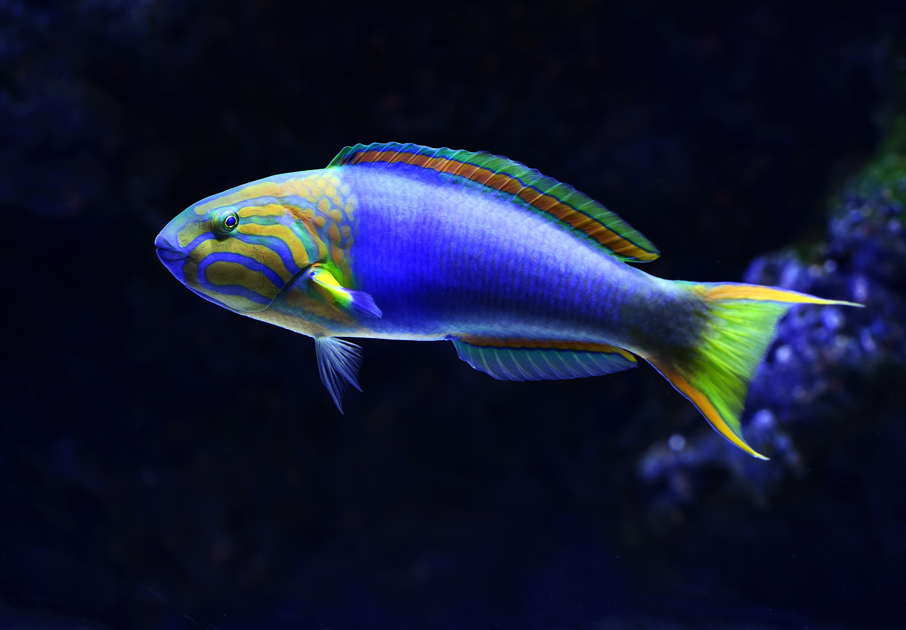

Fishes Species
There are 8 fishes species mentioned below.
This compilation of important information about numerous fish species has been produced by the Fishing World team. Anglers, best of luck out there!
Bass
- Lake Erie, Lake Ontario, Lake Simcoe, Lake St. Clair, and the St. Lawrence River all provide world-class bass fishing (especially for smallmouth bass).
- There are two main types of bass:

- Largemouth Bass: Larger mouth. Greener in colour. Found in warmer/shallower water

- Smallmouth Bass: Smaller Mouth. Brown in colour. Often refereed to as a Bronze Back. Stronger and feistier. Found in cooler water.
Catfish

- Catfish are a bottom feeding fish primarily found in rivers, but also lakes. They have a dark green/brown top with a lighter underbelly. Catfish have a flat head along with their trademark cat-like whiskers.
Carp

- Carp are strong, bottom feeding fish that offer a great fight! They are brown in color with big lips and large scales. They can be found in waters as shallow as 2 feet or as deep as 40 feet. Along with popularity in Europe, Carp fishing has a strong following in Ontario. Fishing World has everything you need with a large selection of carp related gear.
Salmon

- Salmon are silver coloured fish that can be found in all the Great Lakes. They are a cold-water species that spawns in rivers and streams all across Ontario during the fall. As one of the most exciting fish to catch in the province, this strong species will put up a good fight.
- Main Types: Chinook (pictured above), Coho, Pink, Atlantic
Muskie

- Muskie are long fish that are greenish grey in colour with spots and/or stripes. This species can reach up to 50 pounds in size. Often referred to as a fish of 10,000 casts, they are aggressive and have a mouthful of teeth! Ontario is lucky enough to have three of the Top 10 Muskie fishing spots in the world. This includes Lake St. Clair, Georgian Bay, and the St. Lawrence River with special mention to the Niagara River which is on the rebound.
Sunfish/Bluegill

- Sunfish are colourful panfish that taste excellent! The sunfish family is made up of many different varieties including the bluegill (pictured above) and pumpkinseed. They are mainly found in warm shallow water with blue, orange, or yellow accents. This smaller species usually never grows more than 12 inches long and they are quite abundant in the water. This makes them a great species for kids to catch while learning to fish.
Trout

- Trout are a long and narrow fish that vary in color depending on the type. They are a cold-water species that can be found in all the Great Lakes along with rivers and streams. A trout can be caught in a variety of ways including trolling, river fishing, and fly fishing.
- Main Types:
- Brown Trout: Numerous black spots on top of its brown skin
- Rainbow Trout (pictured above): Silver in colour with some green and a red streak
- Lake Trout: Green in colour with white spots and a silver underbelly
Walleye

- Walleye are a long and narrow fish that are olive green in colour with yellow and gold hues. They are Ontario’s most popular gamefish and they are great to eat! They can be caught in lakes and rivers all year long. This makes them very popular during the ice fishing season.